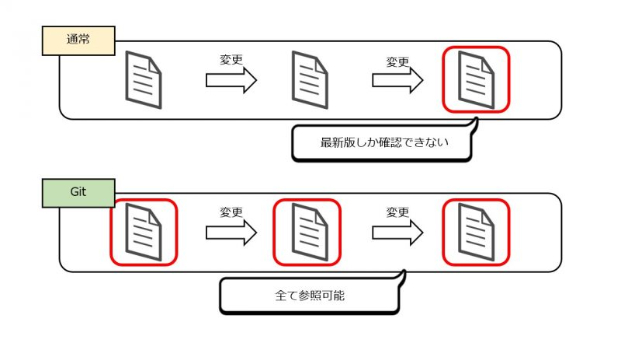
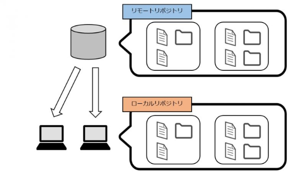
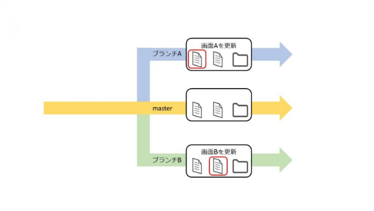
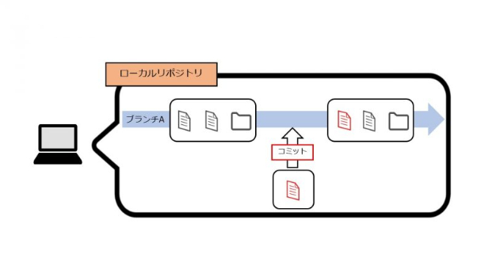
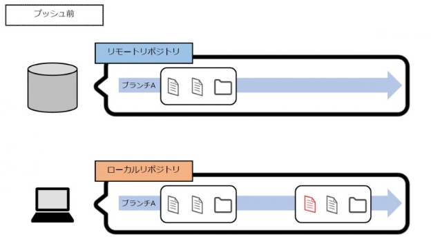
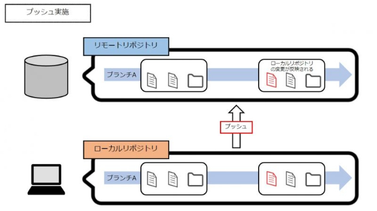
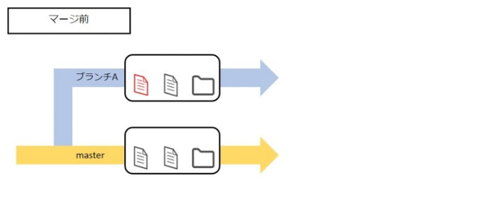
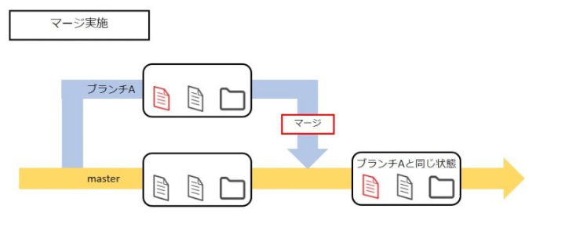

第1回
Gitに関して
◎Gitとは？
ファイルやディレクトリの変更履歴（バージョン）を管理する、分散型バージョン管理システム。
通常のファイルは上書き保存を何度も繰り返す場合、最新の保存状態しか確認できない。
しかし、Gitのようなバージョン管理システムでは、各変更履歴におけるファイルの状態を保存することができる。

引用：
AMG Solution
◎GitとGitHubの違い
＊GitHubとは？
Gitの仕組みを利用したWebサービス。
Gitをベースとして、皆が書いたコードを自由に見たり、修正すべき部分を指摘し合ったりすることが出来る。
＊GitHub 2つの機能
◎基本用語
＊リポジトリ
変更履歴を管理している場所の事。それぞれのバージョンでのディレクトリやファイルの状態が記録されている。
リポジトリには下記の2種類がある。
＜リモートリポジトリ＞
皆で共有するためのリポジトリ。サーバー上に配置されている。
＜ローカルリポジトリ＞
個人で作業するためのリポジトリ。各個人のPCに配置する。

＊ブランチ
複数の作業を並行して進めたいとき、他の画面の変更内容が含まれないように、作業の変更履歴を分けるために作成される。

上記では、masterブランチは本番と同じ内容を保持しているブランチ、ブランチA及びブランチBは作業をするためのブランチと考える。
＊コミット
ブランチAの修正をローカルで行った場合、この内容をブランチAに反映させる手順。

コミットを行った段階では、ローカルリポジトリに対してのみ変更が反映されている状態になっている。
＊プッシュ
ローカルリポジトリでの変更内容をリモートリポジトリに反映させるために行う。
これにより、ローカルリポジトリのブランチAの変更内容がリモートリポジトリのブランチAに反映される。


＊マージ
ブランチを統合させる手順。
masterブランチをブランチAにマージすることで、この2つのブランチは同じ状態となる。


引用：
AMG Solution
◎よく使うGitコマンド
- git init ：リポジトリを新規作成
- git clone ：リポジトリをコピー
- git gc ：リポジトリを最適化
- git pull ：リモートリポジトリの変更点をローカルリポジトリにマージ
- git push ：ローカルリポジトリの変更点をリモートリポジトリにマージ
- git add ：コミット対象のファイルを登録
- git commit ：変更されたファイルをコミット（ローカルリポジトリに変更内容を入れ込む）
- git reset ：直前のコミットを取り消し
- git revert ：特定のコミットを取り消し
- git tag ：コミットにタグを付ける
- git log ：コミット履歴を表示
- git status ：作業ツリー内の差分ファイルを表示
- git diff ：ファイル内の差分箇所を表示
- git mv ：ファイルを移動／ファイル名を変更
- git stash ：作業ツリーの状態を一時的に保存
- git branch ：ブランチの作成／一覧表示
- git checkout ：処理対象ブランチの切り替え
- git merge ：別のブランチから変更点をマージ
- git rebase ：派生元ブランチに変更点をマージ
引用：
SAMURAI ENGINEER Blog
htmlに関して
◎htmlとは？
Webページの記述言語。
ルールに従って記述されたテキストファイルをhtmlドキュメントと呼び、これをブラウザが読み込むことで、Webページを表示させることができる。
また、正式名称は、”HyperText Markup Language” という。日本語に直すと、ハイパーテキストをマークアップする言語、という意味。
＊特徴
- マークアップ
テキストの一部を＜タグ＞と呼ばれる記号で囲むことで、テキストの構造や文章の役割を示すこと。
- ハイパーテキスト
独立した文書を相互に関連づける機能（ハイパーリンク）を持った文書のこと。
※普段私たちが使っているWebページにあるボタンやリンクはハイパーテキストと呼ばれ、リンク先のWebページとつながることができるという機能をハイパーリンクと呼ぶ。
引用：
Web Media